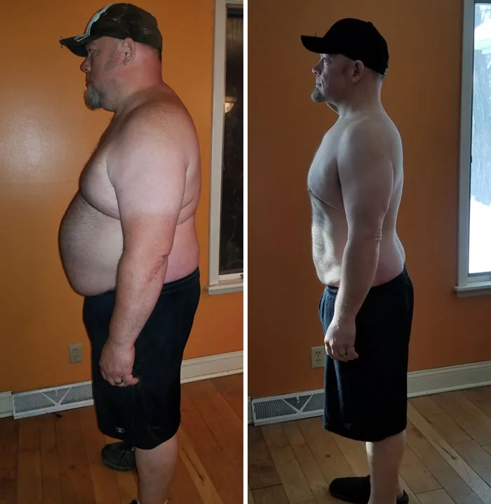

Au début j'étais sceptique, mais après l'avoir essayé, je suis conquise. J'ai enfin atteint mon poids idéal et cela m'a aidée à réaliser mes objectifs.
CommenterJ'aimeSuivre4 min
Julien Lefèvre
La base scientifique de cette approche m'impressionne. Elle semble bien plus efficace que les méthodes miracles.
CommenterJ'aimeSuivre9 min
Léa Rousseau
J'ai tout essayé pour maigrir, mais rien ne fonctionnait. Après avoir regardé la vidéo du Dr Eric Wood, l'espoir est revenu.
CommenterJ'aimeSuivre18 min
Nicolas Vasseur
Enfin un programme minceur qui fonctionne vraiment ! Après d'innombrables régimes et compléments, c'est le seul qui m'a donné de vrais résultats.

CommenterJ'aimeSuivre20 min
Myriam Fontaine
Enfin une solution réaliste et faisable pour perdre du poids.
CommenterJ'aimeSuivre26 min
Laura Fournier
Je craignais d'éventuels effets secondaires, mais l'astuce montrée dans la vidéo est douce pour l'estomac et n'a provoqué aucune réaction négative.
CommenterJ'aimeSuivre31 min
Frédérique Caron
Les fringales étaient un vrai problème, mais cette vidéo m'a appris à les maîtriser et à atteindre mes objectifs de perte de poids.
CommenterJ'aimeSuivre47 min
Sophie Nguyen
J'adore l'astuce du Dr Eric Wood, elle est super simple. Chaque matin je l'ajoute dans mon café et je commence bien la journée.
CommenterJ'aimeSuivre50 min
Claire Weber
Cette astuce est fantastique ! Elle a débloqué ma stagnation et les kilos ont disparu pour de bon.
